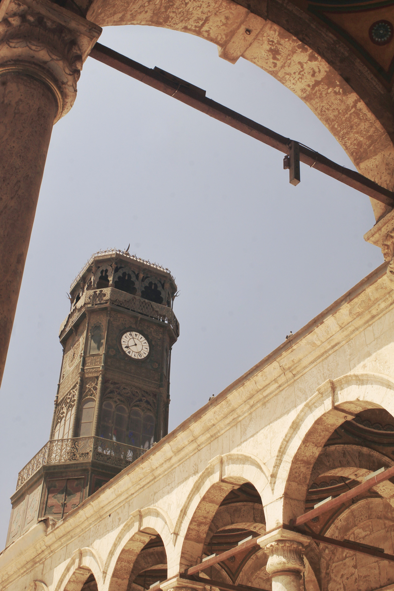

Damascus Old City – 8,000 Years of Living History
Damascus is one of the oldest continuously inhabited cities in the world, with recorded history stretching back over 8,000 years. The Old City — a UNESCO World Heritage Site since 1979 — is a dense, living labyrinth of medieval Islamic architecture, Byzantine churches, Ottoman khans, and Nabataean remains all layered on top of one another.
The Old City is divided into distinct historic quarters: the Islamic quarter around the Umayyad Mosque, the Christian quarter of Bab Touma, the Jewish quarter near the Alliance Israélite school, and the Armenian quarter near Bab Sharqi. Each has its own character, cuisine, and centuries of stories.
Walking through the Old City is walking through layers of history simultaneously — a Roman gate here, an Ayyubid madrasa there, an Ottoman courtyard house (called a Damascus house) behind a nondescript door. The winding lanes of Straight Street (Via Recta), mentioned in the Bible, still run through its heart.


